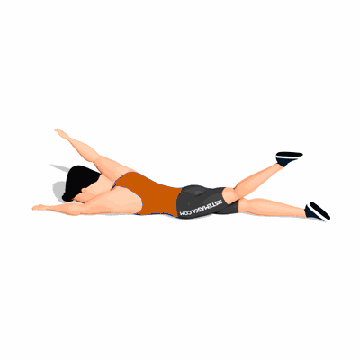

Superman Alternado

O exercício trabalha o fortalecimento dos glúteos, posteriores da coxa e lombar, como também auxilia a prevenir dores nas costas.
Ficha Técnica
Tipo: Funcional
Grupo Muscular: Costas
Aparelho: Nenhum
Músculos: Nenhum
Como realizar
- Deitado com a barriga para baixo e estenda os braços acima da cabeça;
- Realize uma extensão do tronco, elevando a mão direita e perna esquerda;
- Mantenha a posição por alguns segundos e então relaxe e retorne a posição inicial;
- Agora realize extensão novamente do tronco, porém com a mão esquerda e a perna direita;
- Mantenha a posição por alguns segundos e então relaxe novamente;
- Retorne a posição inicial e repita os movimentos alternando as mãos e pernas.
 RC STORE
RC STORE